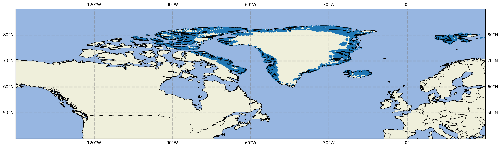
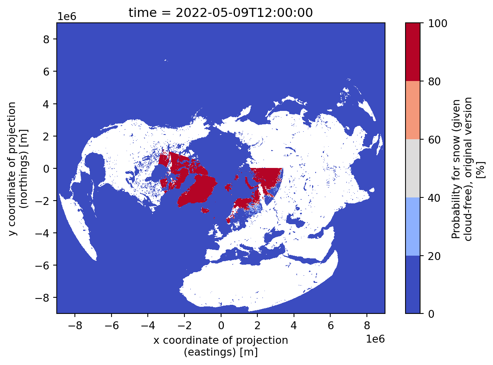

The following document is a preliminary exploration of the available snow cover data to be used in the verification of snow cover for the CERISE project.
import numpy as npimport osimport sysimport matplotlib.pyplot as pltimport matplotlib.cm as cmimport pandas as pdimport cartopy.crs as ccrsimport cartopy.feature as cfeatureimport cdsapiimport xarray as xrimport matplotlib as mplimport cartopy.crs as ccrsdirpath="/media/cap/7fed51bd-a88e-4971-9656-d617655b6312/data/CARRA/CARRA_SW"c = cdsapi.Client()date_sel="20220509"out_cds=os.path.join(dirpath,'era5land_snow_cover_'+date_sel+'.nc')# this one was selected from a quick view of the snow cover data from snow_cryo# min/max from data: min_lat = 60.7, max_lat=83.6, min_lon=-106, max_lon=31.5# format: [north_lat,west_lon,south_lat,east_lon]select_area = [90,-150,60,0]ifnot os.path.isfile(out_cds): c.retrieve('reanalysis-era5-land', {'time': ['00:00', '01:00', '02:00','03:00', '04:00', '05:00','06:00', '07:00', '08:00','09:00', '10:00', '11:00','12:00', '13:00', '14:00','15:00', '16:00', '17:00','18:00', '19:00', '20:00','21:00', '22:00', '23:00', ],'area': select_area,'day': '09','month': '05','year': '2022','variable': 'snow_cover','format': 'netcdf', }, out_cds)else:print(f"{out_cds} already downloaded")def get_data_fromtxt(txtFile) ->None:" Get the data from " lat = [] lon = [] snowFrac = [] f =open(txtFile, 'r')for line in f: line = line.strip() columns = line.split() lat.append(float(columns[2])) lon.append(float(columns[3])) snowFrac.append(float(columns[4])) f.close()return lat, lon, snowFrac
Below we will read and plot the snow_cryo data used in CARRA, which according to Mariken is the result of postprocessing the original cryoclim data, which is on a fixed grid and gives probabilities of snow/no snow in cloud free grid points at 5 km resolution. The data used in CARRA and produced in the “snow_cry_*.dat” files takes only points which are classified as with snow or no snow (excludes cloudy areas, ocean). Furthermore, to reduce the number of observations to CANARI, they - exclude points were SURFEX has glaciers, as they are assumed to be covered by snow. - decimate to “10 km” on Greenland ( but full resolution, “5 km” on Iceland and Svalbard etc )
myData = os.path.join(dirpath,'snow_cryo_5-10km_2022050906.dat')# In[3]:lat, lon, snowFrac = get_data_fromtxt(myData)mycmap = mpl.colormaps["cool"]lowerLeftLat =40lowerLeftLon =-150## -120upperRightLat =90upperRightLon =30lat_inter =10lon_inter =20fig = plt.figure(figsize=(20, 40))# For cylindrical projections 'mill' 'merc' 'cyl' 'cea' Basemap below is OK# resolution: c (crude), l (low), i (intermediate), h (high), f (full)ax = fig.add_subplot(111, projection=ccrs.PlateCarree())ax.add_feature(cfeature.BORDERS.with_scale('10m'), linestyle=':')ax.gridlines(crs=ccrs.PlateCarree(), draw_labels=True, linewidth=2, color='gray', alpha=0.5, linestyle='--')ax.coastlines()ax.add_feature(cfeature.LAND)ax.add_feature(cfeature.OCEAN)ax.scatter(lon, lat, edgecolor="none", s=10)#, facecolor="none")x0,y0 = (lowerLeftLon,lowerLeftLat)x1,y1 = (upperRightLon,upperRightLat)ax.set_xlim(x0,x1)ax.set_ylim(y0,y1)
(40.0, 90.0)

Checking now the ERA5-land data. Plotting the original data.
Reading and plotting the original unprocessed data from snow observations, wich is on a fixed grid as described above. According to Mariken we could also use this data to do the verification.
<matplotlib.contour.QuadContourSet at 0x7faba52786d0>

In the code below we try to do a quick and dirty regridding of the missing data shown in the first plot.
#define the areafrom pyresample import create_area_defarea_def = create_area_def('my_area', projection={"proj": "longlat", "datum": "WGS84"},#{'proj': 'latlong', 'lon_0': 0}, area_extent=[-80, -10, 58, 90], resolution=1, units='degrees', description='Big1x1 degree lat-lon grid')import numpy as npfrom pyresample import image, geometryswath_def = geometry.SwathDefinition(lons=lon,lats=lat)#The snowFrac has to be an np arraydata=np.array(snowFrac)#The ImageContainerNearest and ImageContanerBilinear classes can be used for resampling of swaths as well as grids. Below is an example using nearest neighbour resampling.swath_con = image.ImageContainerNearest(data, swath_def, radius_of_influence=5000)area_con = swath_con.resample(area_def)result_nn = area_con.image_data#Using nearest neighbours in kd_treefrom pyresample import kd_treeresult_nn_kd = kd_tree.resample_nearest(swath_def, data,area_def, radius_of_influence=100000, epsilon=0.5) #radius in metersresult_nn_kdresult_gauss = kd_tree.resample_gauss(swath_def, data,area_def, radius_of_influence=50000, sigmas=25000)area_con.geo_def#Dump the data and plot it again.import geopandas as gpdimport rasteriooutput_filename="./test.tif"outds = rasterio.open(output_filename, #"hello.tif", mode="w", count=1, nodata=9999, driver="GTiff", crs='+proj=latlong', dtype=np.int16, width=result_nn.shape[1], height=result_nn.shape[0], transform=[1, 0, -80, 0, -1, 90])outds.write(result_nn, 1)outds.close()check=rasterio.open(output_filename) #"hello.tif")from rasterio.plot import showshow(check)#to save to imagefrom pyresample import save_quicklooksave_quicklook('resampled_data.png', area_def, result_nn, label='test resample')fig = plt.figure(figsize=(5,15))ax = fig.add_subplot(311)ax.imshow(result_nn,interpolation='nearest')ax.set_title("Nearest neighbor standard")ax = fig.add_subplot(312)ax.imshow(result_nn_kd,interpolation='nearest')plt.title("Nearest neighbor kd")ax = fig.add_subplot(313)ax.imshow(result_gauss,interpolation='nearest')plt.title("Gauss-shape of distance (sigma=25km)\n using 10 neighbors");
/media/cap/7fed51bd-a88e-4971-9656-d617655b6312/data/sources/conda/mambaforge-pypy3/envs/py311/lib/python3.11/site-packages/pyresample/image.py:252: FutureWarning: Usage of ImageContainer is deprecated, please use NumpyResamplerBilinear class instead
super(ImageContainerNearest, self).__init__(image_data, geo_def,
/media/cap/7fed51bd-a88e-4971-9656-d617655b6312/data/sources/conda/mambaforge-pypy3/envs/py311/lib/python3.11/site-packages/pyresample/image.py:252: FutureWarning: Usage of ImageContainer is deprecated, please use NumpyResamplerBilinear class instead
super(ImageContainerNearest, self).__init__(image_data, geo_def,
/media/cap/7fed51bd-a88e-4971-9656-d617655b6312/data/sources/conda/mambaforge-pypy3/envs/py311/lib/python3.11/site-packages/pyresample/kd_tree.py:259: UserWarning: Possible more than 8 neighbours within 50000 m for some data points
get_neighbour_info(source_geo_def,